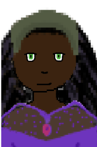
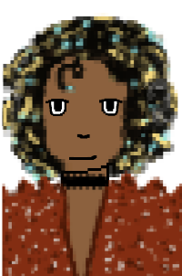

Magic Murder Mystery
The Royalists
The Royalists wholeheartedly support the Monarchy and the order that comes along with it.
They will do anything to protect their King.
Their fierce loyalty is commendable, yet can be dangerous...
Meet the Royalists

Joanna
She is a Countess, who fully supports the Monarchy.
While shes a noble, she does not enjoy the spotlight, prefering the hide behind the King.
She likes to read and debate. She's a Virgo.

Lucian
He is a Baron, whose fourth cousin twice removed is the Dutchess.
He idolizes the King and all that comes with Kingship.
He's a Pisces.
Choose A Side